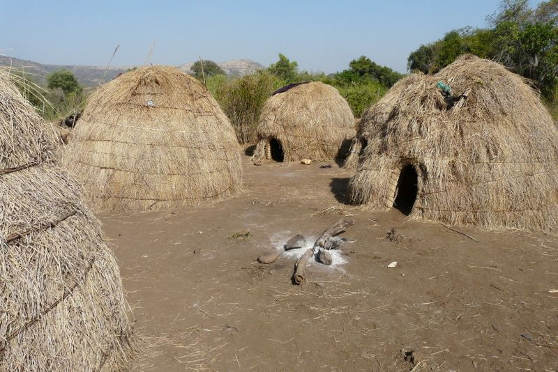

Mursi Stick Fight
“It’s better to die than live without killing” a motto of Mursi men.
The Mursi; is an African tribe that lives in South Ethiopia and Oman Valley of Sudan boarder. As at 2007 national population census, they are about 11,500 of which 848 live in urban areas; of the total number of 92.25% live in the Southern Nation. Their surrounding neighbors are Aari, the Banna, the Mekan, the Karo, the Kwegu, the Nyangatom and the Suri.
The Mursi are classified as Animism even though some of them have adopted Christianity. They serve the Mission Station in the North-Eastern part of Mursi Land which relieve them of their stress in getting proper education and basic medical care which is been catered for. They observe religious rituals, ceremonial duelling, dances, other festivities and ancient practices.
DONGA
Mursi Stick Fight
“Donga” is a ceremonial duelling which Mursi men take part to prove themselves strong enough to get future wife. They wear “Umoga” a duelling kit which is made of animal skin in a form of chin guard. It also serves as decoration. With a wooden pole of about two(2) metres in length, two men battle until one retires or kicked out of the fight. The winner is presented to the women who decides which of them will propose to him.
LIFESTYLE
Read More
Mursi
The traditional dressing of the Mursi people is mainly made from goatskin which is tied at the waist to form a kind of skirt. This is worn until the birth of their first child. After birth, with the naming ceremony called Jonê Chibin, the mother’s receive a gift of leather stole that they wear afterwards.
Speaking of their economic activities, they are specialised in agriculture. They grow sorghum, corn, tobacco, beans and chickpeas. The duty of the women is to make meals out of the harvest provided by the men, gather firewoods and fetch water.
A tradition of painting their body using clay and minerals from the earth is strictly observed by the people. The body painting is not only meant for decorative purpose but its also symbolic. It is to ward off evil spirits, intimidate enemies and to attract the opposite sex.
LIP PLATE
Read More
Mursi
A costume of wearing a lip plate is linked to the female’s fertility and eligibility for marriage. At the puberty age of a female child, the upper or lower lip or both is cut by a female member of the tribe and a small stick is inserted. Each night, larger sticks are inserted to slowly stretch the lips and eventually wearing plates of different sizes and decoration.
It is believed that the size of your lip plate will determine how large your bride wealth will be. A woman without a lip plate is seen as lazy and will not warrant as large a bride wealth. These lip plate are worn by single and newly married women at four different occasions: when serving food to men, at special events, at dances and Donga duelling competitions. A number of years thereafter, the women slowly removes their lip plates most especially when their husband passes away.
HOUSING
Read More
Mursi
The Mursi tribe live deep in the bush . Their housing is in the form of a traditional oven which is made of sticks, cow dung with thatched roofs. The entrance of the housea are waist -level high which prevents wild animals from entering at night. They cover the entrance with piles thorny acacia branches for safety.
Like
227